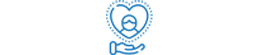
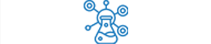
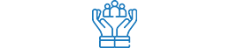
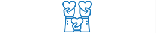
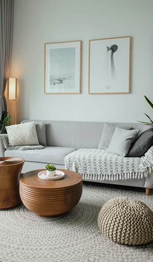
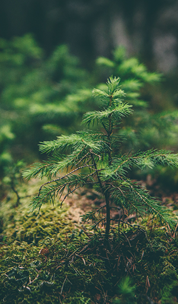
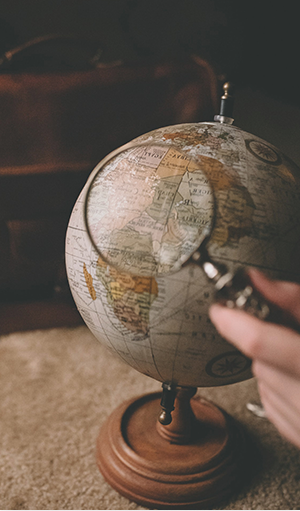

home > 기업소개 > 기업정보
기업정보
글로벌 생활환경 위생기업 CESCO
저희 세스코는
생활환경을 저해하고 각종 질환을 일으킬수있는 해충과 바이러스, 박테리아 등
전염성 유해 세균에 대하여 토털위생솔루션을 제공하여 쾌적한 생활 공간을 약속드립니다.
-

- 고객지향
- 맞춤형 솔루션으로
고객감동을 위한 고객지향
-

- 첨단위생 솔루션 개발
- 창의와 도전으로
첨단위생솔루션 개발
-

- 인재육성
- 존중과 협력문화를
기본으로 한 인재육성
-

- 사회공헌
- 사회공헌으로
사회적 책임을 다하는 기업
VISION&MISSION
“SMILE WITH CESCO” 깨끗한 환경으로 건강한 내일을 약속하는
글로벌 생활환경 위생기업, 세스코가 여러분의 미소를 지켜드립니다.
-

- 01
- 고객의 행복에
기여하는 생활환경 위생기업 - 깨끗한 생활환경을 만들고, 이를 통해 고객의건강하고 보다 나은 삶에 기여합니다.
-
- 02
- 인재와 기술개발을
통합 최고의 품질가치 창출 - 최고 수준의 해충 기술연구소를 필두로, 이물분석 센터와 식품 안전연구소를 보유했습니다.
-

- 03
- 환경가치
창출로 사회공헌 - 환경친화적 위생시스템 개발과 사업활동에서 발생되는 환경오염의 최소화를 위해 노력합니다.
-

- 04
- 글로벌 대표
브랜드로의 도약 - 해충방제 분야에서 세계적인 위상을 발판으로 글로벌 생활 위생 전문 기업으로 도약합니다.